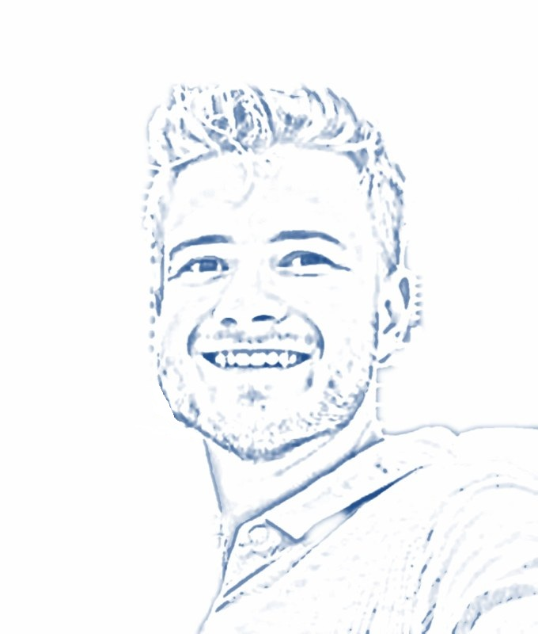

Profile
About me
My name is Moritz Meyer. I am a prospective teacher and live in Münster, Germany.
My subjects are mathematics and social sciences. I have completed my Master of Education and am now deepening my knowledge of economics in the Master’s programme in Economics.
I am particularly interested in how economic relationships can be taught in a clear and tangible way. I gained teaching experience during a practical semester at a grammar school, and experience in teaching and research as a student research assistant at the university.
- Subjects
- Mathematics, social sciences
- Specialisation
- Economics
- Languages
- German, English (C2), Latin (Großes Latinum)

Places
I have not only studied in Münster. Distances are measured in a straight line from Münster.
-
MünsterGermany
since 2020
Starting point
-
GothenburgSweden
2023
697 km
-
Gold CoastAustralia
2024 – 2025
16,130 km
-
LisbonPortugal
2025
1,961 km